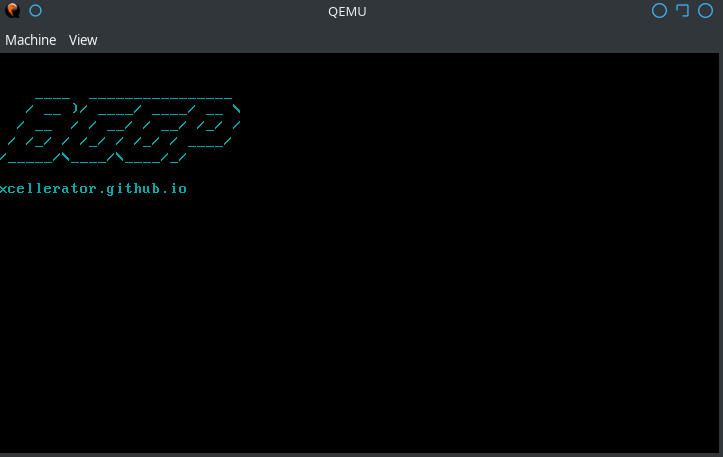

build.sh
sums.sh
A Palindromic Bootloader for BGGP
So named because the execution flow jumps around between reversed and non-reversed op codes in a noodly-tangle.
Please find a write-up of how I built this bootloader here: xcellerator.github.io

Submission
Binary: bin/bootnoodle.bin
Source: src/bootnoodle.asm
Build Instructions
- Run build.sh after cloning
- Check sums below with sums.sh
- Run with qemu-system-x86_64 bin/bootnoodle.bin
SHA256 Sums
- Forward: afd35223493930d7ea455b2352627783bfd53ddc54789cc3d81137da1ec3ac51
- Backward: afd35223493930d7ea455b2352627783bfd53ddc54789cc3d81137da1ec3ac51